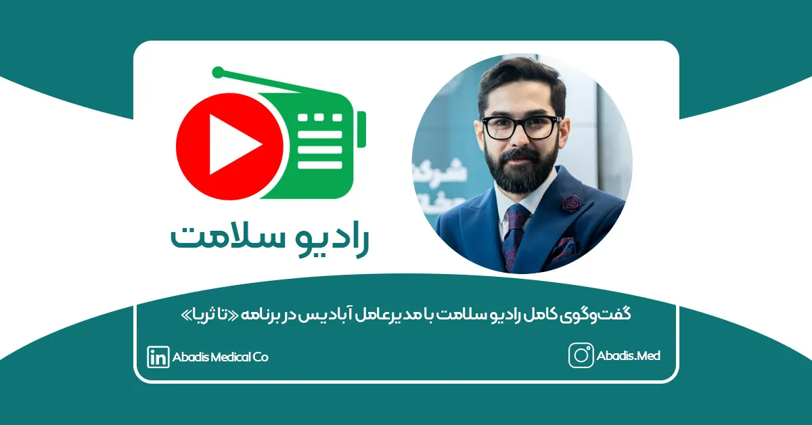
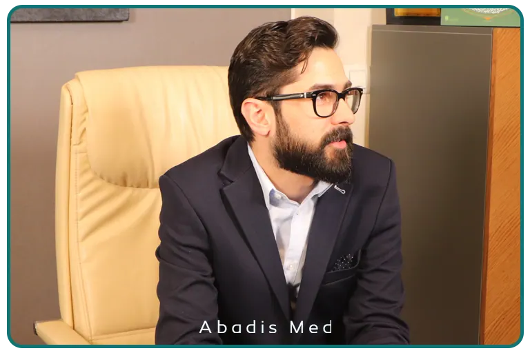
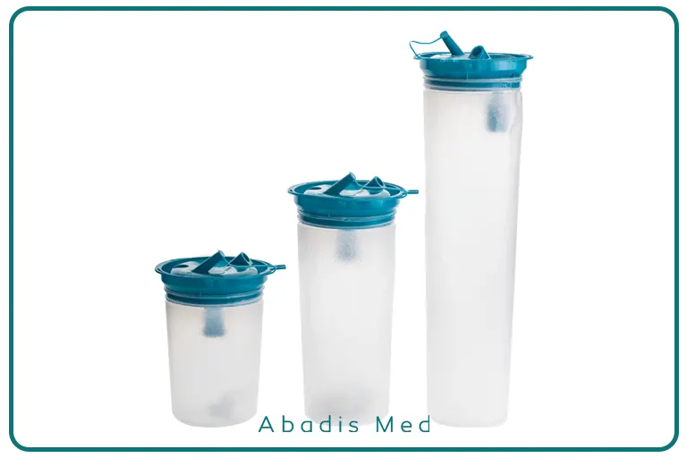
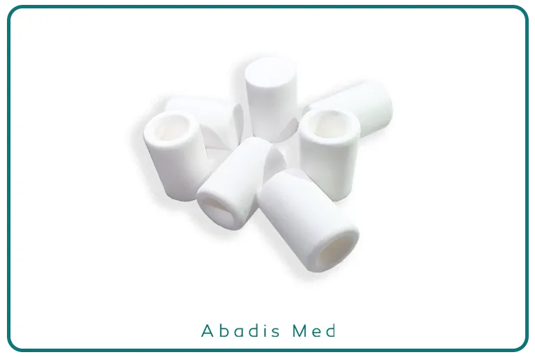

برنامهی «تا ثریا» از شبکه رادیو سلامت به بررسی نوآوریهای داخلی در حوزه تجهیزات پزشکی اختصاص داشت و میزبان علیرضا حسنعلی، مدیرعامل شرکت دانشبنیان مخازن طبی آبادیس بود. این گفتوگو با اجرای خانم دکتر کیانا فرحی و آقای حسنی و حضور کاربران و کادر درمان برگزار شد و محور آن، معرفی کیسههای ساکشن یکبارمصرف، فناوری و صرفهجویی منابع بود.

در ابتدای برنامه، خانم دکتر فرحی با اشاره به اهمیت کاهش مصرف آب و کنترل آلودگی در مراکز درمانی گفت:
«یکی از نمونههای موفق در این زمینه، محصولی است که در داخل کشور طراحی و تولید شده و میتواند جایگزین روشهای سنتی و پرخطر دفع ترشحات جراحی شود. این کیسهها باعث کاهش مصرف آب و افزایش ایمنی کارکنان بیمارستانی شدهاند.»
سپس آقای حسنی به سراغ علیرضا حسنعلی رفت و از او درباره فناوری و عملکرد کیسههای ساکشن یکبارمصرف پرسید.

علیرضا حسنعلی توضیح داد:
«این کیسهها محفظههایی برای جمعآوری ضایعات ساکشن شده در حین عملهای جراحی هستند. پیش از این، مخازن ثابت استفاده میشدند که نیاز به شستوشو داشتند و فرآیند پرهزینه و پرمصرف آب بود. با استفاده از این کیسههای یکبارمصرف، ما توانستیم هم هزینهها را کاهش دهیم و هم حدود ۴۰ میلیون لیتر آب صرفهجویی کنیم.»
او ادامه داد:
«در گذشته، ضایعات عفونی و خونابهها وارد مخازن میشد و پس از آن با مصرف آب و مواد ضدعفونیکننده شستشو انجام میشد. حالا با کیسههای جدید، این فرآیند حذف شده است و هیچ تماس مستقیم کارکنان با مواد آلوده ایجاد نمیشود.»
حسنعلی درباره فناوری کیسهها توضیح داد:
«این کیسهها از پلیمرهای متخلخل و فیلترهای خاص تولید میشوند که وقتی سطح کیسه پر شد، به دستگاه فرمان قطع میدهند. فیلترهای ما از سال ۱۴۰۱ کاملاً داخلی و با کیفیت بهتر تولید میشوند. پیش از ما تنها چهار کشور آمریکا، ژاپن، چین و تایوان این محصول را تولید میکردند و ایران پنجمین کشور است.»

وی درباره روند توسعه محصول گفت:
«از سال ۱۳۹۶ فعالیت خود را آغاز کردیم و محصول از سال ۱۳۹۷ وارد بازار شد. از سال ۱۴۰۰ به بعد، کیسهها در حدود ۶۰۰ مرکز درمانی کشور بهطور کامل استفاده میشوند. همچنین از سه سال پیش به عمان و عراق نیز صادر شدهاند و در شهرهای مختلف این کشورها کاربرد دارند.»
مدیرعامل آبادیس درباره تیم کاری و ساختار شرکت افزود:
«تعداد نیروهای ما بیش از ۵۰ نفر است با میانگین سنی ۳۳ سال. ما به جوانگرایی، تصمیمگیری مبتنی بر داده و استفاده از سیستم هوش تجاری (BI) افتخار میکنیم. این موضوع موجب سرعت رشد و کیفیت تصمیمگیری ما نسبت به شرکتهای مشابه شده است.»
وی سپس به مشکلات و چالشهای شرکت اشاره کرد:
«ما با فشار اقتصادی شدیدی مواجه هستیم. یکی از بزرگترین مشکلات، عدم پرداخت به موقع مطالبات مراکز درمانی و قطعی مکرر برق است. این مسائل انگیزه کارکنان را کاهش میدهد و هزینههای تولید را بالا میبرد. با وجود این، حتی در دوران جنگ اخیر، یک روز هم تولید و ارسال کالا را متوقف نکردیم و حتی روزهای تعطیل هم فعال بودیم، چون وظیفه خود میدانستیم به کشور و مراکز درمانی خدمت کنیم.»
در ادامه، حسنعلی درباره توسعه محصولات گفت:
«ما در حال تکمیل سبد محصول هستیم و فیلترهای ساکشن در سایزهای مختلف ، ساکشن تیوب و محصولات تکمیلی دیگر را توسعه دادهایم. هدف ما ارائه محصولات با کیفیت بالا و گسترش فناوری داخلی در حوزه تجهیزات پزشکی است.»
در بخش گزارش میدانی، کاربران و پرستاران تجربه خود را از استفاده کیسه ساکشن یکبارمصرف بیان کردند:
«قبل از استفاده از این محصول، شستوشوی مخازن زمانبر و پرخطر بود، اما حالا کار بسیار راحتتر و تمیزتر انجام میشود.»
«صرفهجویی در مصرف آب و حذف خطر تماس با ترشحات عفونی ارزشمند است. به تولیدات داخلی افتخار میکنیم و امیدواریم روز به روز پیشرفت کنند.»
آقای حسنی مجری برنامه در پایان گفت:
«این شرکتها نشان میدهند که با تکیه بر دانش و توان داخلی میتوان محصولاتی با استاندارد جهانی تولید کرد. وظیفه رسانههاست که صدای آنها را به گوش مردم و مدیران برسانند.»
خانم دکتر فرحی نیز در پایان افزود:
«توسعه محصولات دانشبنیان در حوزه سلامت، گامی مهم در مسیر حفظ سلامت جامعه و استقلال صنعتی کشور است. امیدواریم شاهد گسترش چنین طرحهای موفقی در آینده باشیم.»
برای شنیدن کامل این گفت و گو روی این لینک کلیک نمایید.